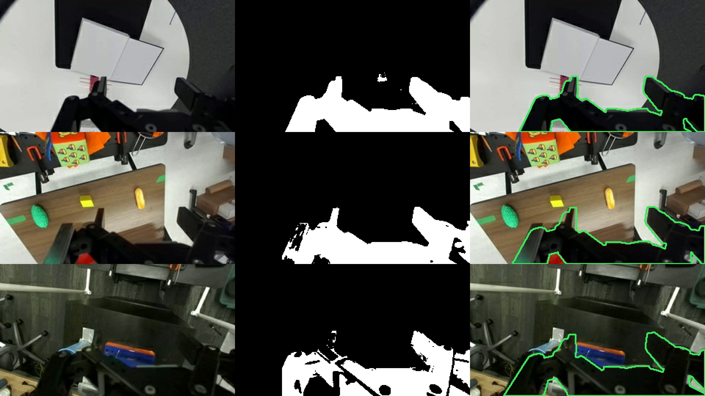

Silhouette Calibration: wrist-camera extrinsics from pre-recorded monocular RGB
Large datasets are noisy
Most robot datasets include monocular RGB wrist videos. Some datasets, such as DROID, ship with camera extrinsics, which allow us to compute derived annotations such as 3D scene geometry or 2D masks. In Cloak for example, we used the wrist camera extrinsics to compute gripper masks for visual attention masking.
The problem is that real datasets get messy at scale. Different rigs have camera mounts attached slightly differently, cameras accidentally flipped upside down, or use different gripper models (all of these problems are present in the DROID data). These all contribute to inaccurate camera extrinsics, even in a very standardized rig like DROID.
The standard fix is to recalibrate the cameras using hand-eye calibration. But this needs known point correspondences and access to the physical robot, which we don't have in a pre-recorded dataset. In Cloak, to calibrate wrist camera extrinsics in a pre-recorded monocular RGB video, we introduced a method we call Silhouette Calibration; we render end-effector masks in sim and solve for the 6-DoF camera extrinsics by regressing the mask on a pseudo-ground-truth target mask.
Silhouette Calibration
We leverage the fact that the end-effector is roughly the same color and occupies approximately the same pixels in every wrist image. This allows us to compute a pseudo-ground-truth target mask composed of the "most constant" pixels across the trajectory.
For each episode with wrist frames \( I_t \in \mathbb{R}^{H \times W \times 3} \) and joint positions \( q_t \), we want the pose of the camera in the end-effector frame, \( T_{ec} \in SE(3) \), which we parameterize as \( \theta \in \mathbb{R}^6 \) representing the 6-DoF pose of the camera. We will solve the following optimization problem
We construct the pseudo-ground-truth mask in the following way. We take frames where the end-effector is in a known pose (e.g. gripper open), converting the frames to grayscale, and cropping them to a region where the gripper is known to be (e.g. the bottom half of the image). Call these frames \( \tilde{I}_t \) with pixel values \( \tilde{I}_{t, p} \) indexed by \( p \). In DROID the grippers are all the black Robotiq-2f85 gripper, so we want to find the most consistently dark pixels. To do this we compute the median intensity across time for each pixel and then another spatial median. Similarly, to find the most constant pixels in the episode (regardless of color) we compute the median of the temporal standard deviation.
The pseudo-ground-truth is often noisy, and not suitable for direct use in Cloak, but is a sufficient target for optimizing \( \theta \). We solve Equation \( \ref{eq:opt} \) with Nelder-Mead initialized at the median DROID camera extrinsic vector. Figure shows qualitative results of Silhouette Calibration on several episodes. Note that the pseudo-ground-truth mask is constructed from many frames, but the optimization is done on the first gripper-open frame only.

DROID results
DROID ships its own wrist extrinsics for each episode. However, despite having a standardized hardware setup, there is significant noise in the camera extrinsics, which necessitates estimating them ourselves if we want pixel-accurate masking in the RGB images. We sampled 200 DROID episodes and compared the given extrinsics with extrinsics estimated via Silhouette Calibration. Figure shows qualitative results.
In the external view above, across the six episodes, the extrinsics optimized via Silhouette Calibration all appear roughly in the same position, while the DROID extrinsics show much more variance. Similarly, in the video, the green mask contour (ours) aligns more closely with the gripper than the cyan contour (DROID).
Figure shows the spread of the data by plotting each extrinsics vector's distance from the attachment site from Figure . Quantitatively, extrinsics vectors obtained via Silhouette Calibration are clustered more tightly than their DROID counterparts. The remaining variance is likely a mix of a null space in the optimization, where multiple solutions produce the same rendered mask, and genuine variance in the camera and gripper mounting configuration.
Limitations and release
Regressing a 3D pose on a 2D mask does not yield a unique solution. Multiple camera poses can produce similar masks. This makes our method sensitive to initialization, and therefore initializing from the median DROID extrinsics pose was necessary. Silhouette Calibration should be understood as a lightweight refinement step from a reasonable initial guess. Moreover, it is only reliably tested for achieving pixel-accurate 2D end-effector masks.
The calibrated extrinsics for DROID (assets/droid_wrist_extrinsics.json) and example code are in the Cloak repository.